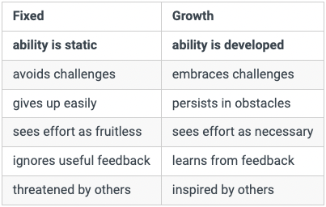

What is a growth mindset
Having a growth mindset means that you do not believe that your abilities, intelligence, or talents are fixed traits, but that they can be practiced, and improved over time.
This mindset can improve the way you interpret your current ability in all aspects of your life. It is a great motivator to be better, because you can now internalise that you CAN be better.

Thinking about growth mindset
Something that was eye-opening for me is the statement that confidence can be developed through actions.
By displaying your ability, to others, but more importantly to yourself.
Prove it to yourself that you can do something, then you will believe it. Confidence is displayed ability.
You are not defective.
Growth mindset integration
Something I need to think about further and practice is looking directly at what terrifies me. Voluntary exposure to the uncomfortable.
This is what makes a person braver going forward. Facing what we are afraid of makes us freer. Freer than we would be had we not faced challenges, and laid our head down at night in fear not having achieved something we found difficult.
Do not have famine thinking. Be more open in various ways. Open to criticism, to challenges, to celebrating other peoples achievements.
The idea that I can be anything I work to be, through focused learning.
Further thinking
Here is a Ted Talk with Carol Dweck that illustrates the power and potential results of having a growth mindset.